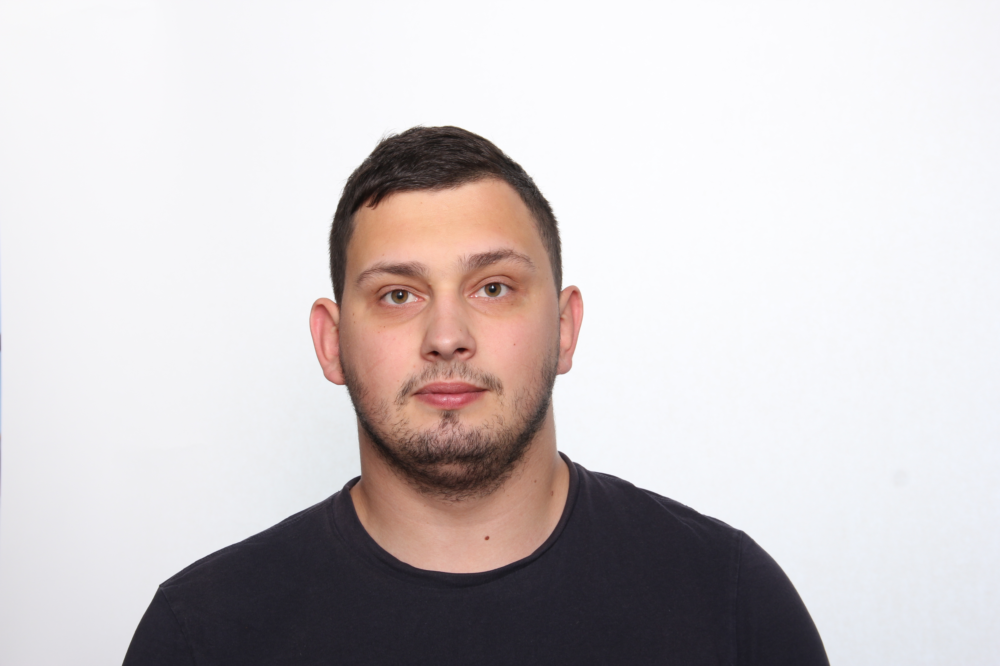

|  |
- Uladzislau Rybakou
- +375445670007 rybakou.vladik@gmail.com
- I want to be a JS developer on the interesting project with the latest and demanded technology. This profession is interested for me. I want to be a good programmer and will do everything what depends on me. Very important things for me is learning new technologies and improving me skills.
- c++, java, react, JS 5.
- if(num % i === 0){ return false;
}
- -
- Specialist of Information systems and technologies in Logistics, BSUIR, Minsk
- English level is A1. I have English courses two times a week
|